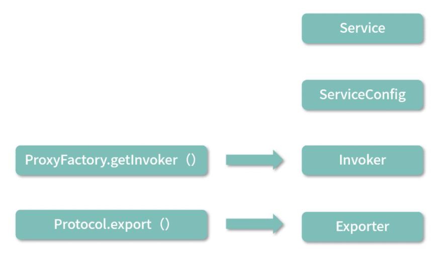
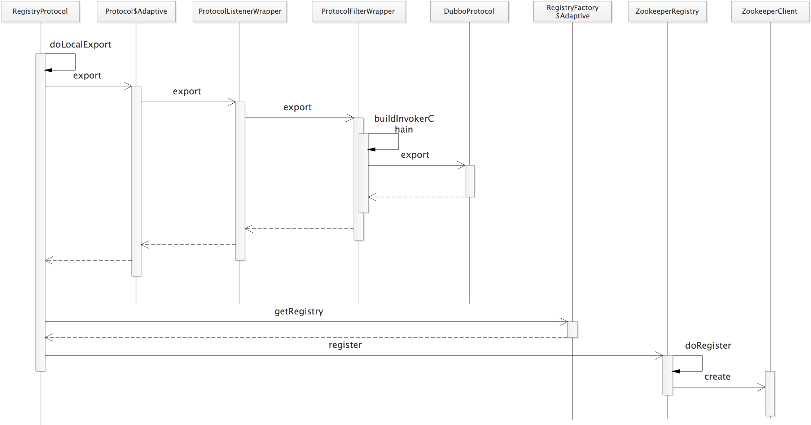

从前面章节 dubbo-demo-api-provider 示例的 Provider 实现中，我们可以看到，整个 Provider 节点的启动入口是 DubboBootstrap.start() 方法，在该方法中会执行一些初始化操作，以及一些状态控制字段的更新，具体实现如下：
x1// DubboBootstrap.java2
3private AtomicBoolean started = new AtomicBoolean(false);4
5public DubboBootstrap start() {6 // CAS操作，保证启动一次7 if (started.compareAndSet(false, true)) {8 // 用于判断当前节点是否已经启动完毕，在后面的Dubbo QoS中会使用到该字段9 ready.set(false);10 // 初始化一些基础组件，例如，配置中心相关组件、事件监听、元数据相关组件11 initialize();12 // 发布服务13 exportServices();14
15 if (!isOnlyRegisterProvider() || hasExportedServices()) {16 // 暴露本地元数据服务17 exportMetadataService();18 // 将服务实例注册到专用于服务发现的注册中心19 registerServiceInstance();20 }21
22 // 处理Consumer的ReferenceConfig23 referServices();24 if (asyncExportingFutures.size() > 0) {25 // 异步发布服务，启动一个线程监听发布是否完成，完成之后会将ready设置为true26 new Thread(() -> {27 try {28 this.awaitFinish();29 } catch (Exception e) {30 logger.warn(NAME + " exportAsync occurred an exception.");31 }32 ready.set(true);33 }).start();34 } else {35 // 同步发布服务成功之后，会将ready设置为true36 ready.set(true);37 }38 }39 return this;40} 这里我们重点关注的是exportServices()方法，它是服务发布核心逻辑的入口，其中每一个服务接口都会转换为对应的 ServiceConfig 实例，然后通过代理的方式转换成 Invoker，最终转换成 Exporter 进行发布。服务发布流程中涉及的核心对象转换，如下图所示：

exportServices() 方法的具体实现如下：
251// DubboBootstrap.java2private void exportServices() {4// 从配置管理器中获取到所有的要暴露的服务配置，一个接口类对应一个ServiceConfigBase实例5configManager.getServices().forEach(sc -> {6ServiceConfig serviceConfig = (ServiceConfig) sc;7serviceConfig.setBootstrap(this);8// 异步模式，获取一个线程池来异步执行服务发布逻辑10if (exportAsync) {11ExecutorService executor = executorRepository.getServiceExporterExecutor();12Future<?> future = executor.submit(() -> {13sc.export();14exportedServices.add(sc);15});16// 记录异步发布的Future17asyncExportingFutures.add(future);18}19// 同步发布20else {21sc.export();22exportedServices.add(sc);23}24});25}
不仅是直接通过 API 启动 Provider 的方式会使用到 DubboBootstrap，在 Spring 与 Dubbo 集成的时候也是使用 DubboBootstrap 作为服务发布入口的，具体逻辑在 DubboBootstrapApplicationListener 这个 Spring Context 监听器中，如下所示：
331// DubboBootstrapApplicationListener.java2
3public class DubboBootstrapApplicationListener extends OneTimeExecutionApplicationContextEventListener4 implements Ordered {5
6 public static final String BEAN_NAME = "dubboBootstrapApplicationListener";7
8 private final DubboBootstrap dubboBootstrap;9
10 public DubboBootstrapApplicationListener() {11 // 初始化DubboBootstrap对象12 this.dubboBootstrap = DubboBootstrap.getInstance();13 }14
15 16 public void onApplicationContextEvent(ApplicationContextEvent event) {17 // 监听ContextRefreshedEvent事件和ContextClosedEvent事件18 if (event instanceof ContextRefreshedEvent) {19 onContextRefreshedEvent((ContextRefreshedEvent) event);20 } else if (event instanceof ContextClosedEvent) {21 onContextClosedEvent((ContextClosedEvent) event);22 }23 }24
25 private void onContextRefreshedEvent(ContextRefreshedEvent event) {26 // 启动DubboBootstrap27 dubboBootstrap.start();28 }29
30 private void onContextClosedEvent(ContextClosedEvent event) {31 dubboBootstrap.stop();32 }33}在 ServiceConfig.export() 方法中，服务发布的第一步是检查参数，第二步会根据当前配置决定是延迟发布还是立即调用 doExport() 方法进行发布，第三步会通过 exported() 方法回调相关监听器，具体实现如下：
291// ServiceConfig.java2
3public synchronized void export() {4
5 if (!shouldExport()) {6 return;7 }8
9 if (bootstrap == null) {10 bootstrap = DubboBootstrap.getInstance();11 bootstrap.init();12 }13
14 // 检查并更新各项配置15 checkAndUpdateSubConfigs();16
17 // ...初始化元数据相关服务18
19 // 延迟发布20 if (shouldDelay()) { 21 DELAY_EXPORT_EXECUTOR.schedule(this::doExport, getDelay(), TimeUnit.MILLISECONDS);22 }23 // 立即发布24 else { 25 doExport();26 }27 // 回调监听器28 exported(); 29}在 checkAndUpdateSubConfigs() 方法中，会去检查各项配置是否合理，并补齐一些缺省的配置信息，这个方法非常冗长，我就不赘述了。完成配置的检查之后，再来看 doExport() 方法，其中首先调用 loadRegistries() 方法加载注册中心信息，即将 RegistryConfig 配置解析成 registryUrl。无论是使用 XML、Annotation，还是 API 配置方式，都可以配置多个注册中心地址，一个服务接口可以同时注册在多个不同的注册中心。
RegistryConfig 是 Dubbo 的多个配置对象之一，可以通过解析 XML、Annotation 中注册中心相关的配置得到，对应的配置如下（当然，也可以直接通过 API 创建得到）：
11<dubbo:registry address="zookeeper://127.0.0.1:2181" protocol="zookeeper" port="2181" />RegistryUrl 的格式大致如下（为了方便查看，这里将每个 URL 参数单独放在一行中展示）：
131// path是Zookeeper的地址2
3registry://127.0.0.1:2181/org.apache.dubbo.registry.RegistryService?4
5application=dubbo-demo-api-provider6
7&dubbo=2.0.28
9&pid=940510
11®istry=zookeeper // 使用的注册中心是Zookeeper12
13×tamp=1600307343086 加载注册中心信息得到 RegistryUrl 之后，会遍历所有的 ProtocolConfig，依次调用 doExportUrlsFor1Protocol(protocolConfig, registryURLs) 在每个注册中心发布服务。一个服务接口可以以多种协议进行发布，每种协议都对应一个 ProtocolConfig，例如我们在 Demo 示例中，只使用了 dubbo 协议，对应的配置是：<dubbo:protocol name="dubbo" />。
doExportUrlsFor1Protocol() 方法的代码非常长，分成两个部分进行介绍：一部分是组装服务的 URL。另一部分服务发布。
组装服务的 URL 核心步骤有如下 7 步。
获取此次发布使用的协议，默认使用 dubbo 协议。
设置服务 URL 中的参数，这里会从 MetricsConfig、ApplicationConfig、ModuleConfig、ProviderConfig、ProtocolConfig 中获取配置信息，并作为参数添加到 URL 中。这里调用的 appendParameters() 方法会将 AbstractConfig 中的配置信息存储到 Map 集合中，后续在构造 URL 的时候，会将该集合中的 KV 作为 URL 的参数。
解析指定方法的 MethodConfig 配置以及方法参数的 ArgumentConfig 配置，得到的配置信息也是记录到 Map 集合中，后续作为 URL 参数。
根据此次调用是泛化调用还是普通调用，向 Map 集合中添加不同的键值对。
获取 token 配置，并添加到 Map 集合中，默认随机生成 UUID。
获取 host、port 值，并开始组装服务的 URL。
根据 Configurator 覆盖或新增 URL 参数。
1011// ServiceConfig.java2
3private void doExportUrlsFor1Protocol(ProtocolConfig protocolConfig, List<URL> registryURLs) {4 // 获取协议名称5 String name = protocolConfig.getName(); 6 // 默认使用Dubbo协议7 if (StringUtils.isEmpty(name)) { 8 name = DUBBO;9 }10 // 记录URL的参数11 Map<String, String> map = new HashMap<String, String>(); 12 // side参数13 map.put(SIDE_KEY, PROVIDER_SIDE); 14
15 // 添加URL参数，例如Dubbo版本、时间戳、当前PID等16 ServiceConfig.appendRuntimeParameters(map);17
18 // 下面会从各个Config获取参数，例如，application、interface参数等19 AbstractConfig.appendParameters(map, getMetrics());20 AbstractConfig.appendParameters(map, getApplication());21 AbstractConfig.appendParameters(map, getModule());22 AbstractConfig.appendParameters(map, provider);23 AbstractConfig.appendParameters(map, protocolConfig);24 AbstractConfig.appendParameters(map, this);25
26 MetadataReportConfig metadataReportConfig = getMetadataReportConfig();27 if (metadataReportConfig != null && metadataReportConfig.isValid()) {28 map.putIfAbsent(METADATA_KEY, REMOTE_METADATA_STORAGE_TYPE);29 }30
31 // 从MethodConfig中获取URL参数32 if (CollectionUtils.isNotEmpty(getMethods())) { 33 for (MethodConfig method : getMethods()) {34 AbstractConfig.appendParameters(map, method, method.getName());35 String retryKey = method.getName() + ".retry";36 if (map.containsKey(retryKey)) {37 String retryValue = map.remove(retryKey);38 if ("false".equals(retryValue)) {39 map.put(method.getName() + ".retries", "0");40 }41 }42
43 List<ArgumentConfig> arguments = method.getArguments();44 if (CollectionUtils.isNotEmpty(arguments)) {45 // 从ArgumentConfig中获取URL参数46 for (ArgumentConfig argument : arguments) { 47 //...48 }49 }50 } 51 }52
53 // 根据generic是否为true，向map中添加不同的信息54 if (ProtocolUtils.isGeneric(generic)) { 55 map.put(GENERIC_KEY, generic);56 map.put(METHODS_KEY, ANY_VALUE);57 } else {58 String revision = Version.getVersion(interfaceClass, version);59 if (revision != null && revision.length() > 0) {60 map.put(REVISION_KEY, revision);61 }62
63 String[] methods = Wrapper.getWrapper(interfaceClass).getMethodNames();64 if (methods.length == 0) {65 map.put(METHODS_KEY, ANY_VALUE);66 } else {67 // 添加method参数68 map.put(METHODS_KEY, StringUtils.join(new HashSet<String>(Arrays.asList(methods)), ","));69 }70 }71
72 // 添加token到map集合中，默认随机生成UUID73 if(ConfigUtils.isEmpty(token) && provider != null) {74 token = provider.getToken();75 }76
77 if (!ConfigUtils.isEmpty(token)) {78 if (ConfigUtils.isDefault(token)) {79 map.put(TOKEN_KEY, UUID.randomUUID().toString());80 } else {81 map.put(TOKEN_KEY, token);82 }83 }84 // 将map数据放入serviceMetadata中，这与元数据相关，后面再详细介绍其作用85 serviceMetadata.getAttachments().putAll(map);86
87 // 获取host、port值88 String host = findConfigedHosts(protocolConfig, registryURLs, map);89 Integer port = findConfigedPorts(protocolConfig, name, map);90
91 // 根据上面获取的host、port以及前文获取的map集合组装URL92 URL url = new URL(name, host, port, getContextPath(protocolConfig).map(p -> p + "/" + path).orElse(path), map);93
94 // 通过Configurator覆盖或添加新的参数95 if (ExtensionLoader.getExtensionLoader(ConfiguratorFactory.class)96 .hasExtension(url.getProtocol())) {97 url = ExtensionLoader.getExtensionLoader(ConfiguratorFactory.class)98 .getExtension(url.getProtocol()).getConfigurator(url).configure(url);99 }100 //...101}经过上述准备操作之后，得到的服务 URL 如下所示（为了方便查看，这里将每个 URL 参数单独放在一行中展示）：
311dubbo://172.17.108.185:20880/org.apache.dubbo.demo.DemoService?2anyhost=true4&application=dubbo-demo-api-provider6&bind.ip=172.17.108.1858&bind.port=2088010&default=true12&deprecated=false14&dubbo=2.0.216&dynamic=true18&generic=false20&interface=org.apache.dubbo.demo.DemoService22&methods=sayHello,sayHelloAsync24&pid=391826&release=28&side=provider30×tamp=1600437404483
完成了服务 URL 的组装之后，doExportUrlsFor1Protocol() 方法开始执行服务发布。服务发布可以分为 远程发布 和 本地发布 ，具体发布方式与服务 URL 中的 scope 参数有关。
scope 参数有三个可选值，分别是 none、remote 和 local，分别代表不发布、发布到本地和发布到远端注册中心，从下面介绍的 doExportUrlsFor1Protocol() 方法代码中可以看到：
发布到本地的条件是 scope != remote；
发布到注册中心的条件是 scope != local。
scope 参数的默认值为 null ，也就是说，默认会同时在本地和注册中心发布该服务。下面来看 doExportUrlsFor1Protocol() 方法中发布服务的具体实现：
791// ServiceConfig.java2
3private void doExportUrlsFor1Protocol(ProtocolConfig protocolConfig, List<URL> registryURLs) {4
5 // ...省略组装服务URL的过程6
7 // 从URL中获取scope参数，其中可选值有none、remote、local三个，8 // 分别代表不发布、发布到本地以及发布到远端，具体含义在下面一一介绍9 String scope = url.getParameter(SCOPE_KEY);10
11 // scope不为none，才进行发布12 if (!SCOPE_NONE.equalsIgnoreCase(scope)) { 13 // 发布到本地14 if (!SCOPE_REMOTE.equalsIgnoreCase(scope)) {15 // ---往下看---16 exportLocal(url);17 // ---end---ss18 }19
20 // 发布到远端的注册中心21 if (!SCOPE_LOCAL.equalsIgnoreCase(scope)) { 22 // 当前配置了至少一个注册中心23 if (CollectionUtils.isNotEmpty(registryURLs)) { 24 // 向每个注册中心发布服务25 for (URL registryURL : registryURLs) { 26 // injvm协议只在exportLocal()中有用，不会将服务发布到注册中心27 // 所以这里忽略injvm协议28 if (LOCAL_PROTOCOL.equalsIgnoreCase(url.getProtocol())){29 continue;30 }31
32 // 设置服务URL的dynamic参数33 url = url.addParameterIfAbsent(DYNAMIC_KEY, registryURL.getParameter(DYNAMIC_KEY));34
35 // 创建monitorUrl，并作为monitor参数添加到服务URL中36 URL monitorUrl = ConfigValidationUtils.loadMonitor(this, registryURL);37 if (monitorUrl != null) {38 url = url.addParameterAndEncoded(MONITOR_KEY, monitorUrl.toFullString());39 }40
41 // 设置服务URL的proxy参数，即生成动态代理方式(jdk或是javassist)，作为参数添加到RegistryURL中42 String proxy = url.getParameter(PROXY_KEY);43 if (StringUtils.isNotEmpty(proxy)) {44 registryURL = registryURL.addParameter(PROXY_KEY, proxy);45 }46
47 // 为服务实现类的对象创建相应的Invoker，getInvoker()方法的第三个参数中，会将服务URL作为export参数添加到RegistryURL中48 // 这里的PROXY_FACTORY是ProxyFactory接口的适配器49 Invoker<?> invoker = PROXY_FACTORY.getInvoker(ref, (Class) interfaceClass, registryURL.addParameterAndEncoded(EXPORT_KEY, url.toFullString()));50
51 // DelegateProviderMetaDataInvoker是个装饰类，将当前ServiceConfig和Invoker关联起来而已，invoke()方法透传给底层Invoker对象52 DelegateProviderMetaDataInvoker wrapperInvoker = new DelegateProviderMetaDataInvoker(invoker, this);53 54 // ---往下看---55 // 调用Protocol实现，进行发布。这里的PROTOCOL是Protocol接口的适配器56 Exporter<?> exporter = PROTOCOL.export(wrapperInvoker);57 // ---end---58 exporters.add(exporter);59 }60 } else {61 // 不存在注册中心，仅发布服务，不会将服务信息发布到注册中心62 // Consumer没法在注册中心找到该服务的信息，但是可以直连63
64 // 具体的发布过程与上面的过程类似，只不过不会发布到注册中心65 Invoker<?> invoker = PROXY_FACTORY.getInvoker(ref, (Class) interfaceClass, url);66 DelegateProviderMetaDataInvoker wrapperInvoker = new DelegateProviderMetaDataInvoker(invoker, this);67 Exporter<?> exporter = PROTOCOL.export(wrapperInvoker);68 exporters.add(exporter);69 }70
71 // 元数据相关操作72 WritableMetadataService metadataService = WritableMetadataService.getExtension(url.getParameter(METADATA_KEY, DEFAULT_METADATA_STORAGE_TYPE));73 if (metadataService != null) {74 metadataService.publishServiceDefinition(url);75 }76 }77 }78 this.urls.add(url);79}本地发布exportLocal()方法中，会将 Protocol 替换成 injvm 协议，将 host 设置成 127.0.0.1，将 port 设置为 0，得到新的 LocalURL，大致如下：
291injvm://127.0.0.1/org.apache.dubbo.demo.DemoService?anyhost=true2
3&application=dubbo-demo-api-provider4
5&bind.ip=172.17.108.1856
7&bind.port=208808
9&default=true10
11&deprecated=false12
13&dubbo=2.0.214
15&dynamic=true16
17&generic=false18
19&interface=org.apache.dubbo.demo.DemoService20
21&methods=sayHello,sayHelloAsync22
23&pid=424924
25&release=26
27&side=provider28
29×tamp=1600440074214之后，会通过 ProxyFactory 接口适配器找到对应的 ProxyFactory 实现（默认使用 JavassistProxyFactory），并调用 getInvoker() 方法创建 Invoker 对象；最后，通过 Protocol 接口的适配器查找到 InjvmProtocol 实现，并调用 export() 方法进行发布。 exportLocal() 方法的具体实现如下：
151// InjvmProtocol.java2
3private void exportLocal(URL url) {4 // 创建新URL5 URL local = URLBuilder.from(url) 6 .setProtocol(LOCAL_PROTOCOL)7 .setHost(LOCALHOST_VALUE)8 .setPort(0)9 .build();10
11 // 本地发布12 Exporter<?> exporter = PROTOCOL.export(13 PROXY_FACTORY.getInvoker(ref, (Class) interfaceClass, local));14 exporters.add(exporter);15}远程发布：在 doExportUrlsFor1Protocol() 方法中，远程发布服务时，会遍历全部 RegistryURL，并根据 RegistryURL 选择对应的 Protocol 扩展实现进行发布。我们知道 RegistryURL 是 "registry://" 协议，所以这里使用的是 RegistryProtocol 实现。
491// RegistryProtocol.java2
3public <T> Exporter<T> export(final Invoker<T> originInvoker) throws RpcException {4
5 // 将"registry://"协议转换成"zookeeper://"协议6 URL registryUrl = getRegistryUrl(originInvoker);7
8 // 获取export参数，其中存储了一个"dubbo://"协议的ProviderURL9 URL providerUrl = getProviderUrl(originInvoker);10
11 // 获取要监听的配置目录，这里会在ProviderURL的基础上添加category=configurators参数，并封装成对OverrideListener记录到overrideListeners集合中12 final URL overrideSubscribeUrl = getSubscribedOverrideUrl(providerUrl);13
14 final OverrideListener overrideSubscribeListener = new OverrideListener(overrideSubscribeUrl, originInvoker);15
16 overrideListeners.put(overrideSubscribeUrl, overrideSubscribeListener);17
18 // 初始化时会检测一次Override配置，重写ProviderURL19 providerUrl = overrideUrlWithConfig(providerUrl, overrideSubscribeListener);20
21 // 导出服务，底层会通过执行DubboProtocol.export()方法，启动对应的Server22 final ExporterChangeableWrapper<T> exporter = doLocalExport(originInvoker, providerUrl);23
24 // 根据RegistryURL获取对应的注册中心Registry对象，其中会依赖之前课时介绍的RegistryFactory25 final Registry registry = getRegistry(originInvoker);26
27 // 获取将要发布到注册中心上的Provider URL，其中会删除一些多余的参数信息28 final URL registeredProviderUrl = getUrlToRegistry(providerUrl, registryUrl);29
30 // 根据register参数值决定是否注册服务31 boolean register = providerUrl.getParameter(REGISTER_KEY, true);32
33 // 调用Registry.register()方法将registeredProviderUrl发布到注册中心34 if (register) { 35 register(registryUrl, registeredProviderUrl);36 }37
38 // 将Provider相关信息记录到的ProviderModel中39 registerStatedUrl(registryUrl, registeredProviderUrl, register);40
41 // 向注册中心进行订阅override数据，主要是监听该服务的configurators节点42 registry.subscribe(overrideSubscribeUrl, overrideSubscribeListener);43 exporter.setRegisterUrl(registeredProviderUrl);44 exporter.setSubscribeUrl(overrideSubscribeUrl);45
46 // 触发RegistryProtocolListener监听器47 notifyExport(exporter);48 return new DestroyableExporter<>(exporter);49}远程发布流程大致可分为下面 5 个步骤。
准备 URL，比如 ProviderURL、RegistryURL 和 OverrideSubscribeUrl。
发布 Dubbo 服务。在 doLocalExport() 方法中调用 DubboProtocol.export() 方法启动 Provider 端底层 Server。
注册 Dubbo 服务。在 register() 方法中，调用 ZookeeperRegistry.register() 方法向 Zookeeper 注册服务。
订阅 Provider 端的 Override 配置。调用 ZookeeperRegistry.subscribe() 方法订阅注册中心 configurators 节点下的配置变更。
触发 RegistryProtocolListener 监听器。

Dubbo 作为一个 RPC 框架，暴露给用户最基本的功能就是服务发布和服务引用。Dubbo 支持两种方式引用远程的服务：
服务直连：仅适合在测试场景调试服务时使用；
基于注册中心引用：这是生产环境中使用的服务引用方式。
在1-1中介绍了DubboBootstrap.start()方法的核心流程，除了会调用 exportServices() 方法完成服务发布之外，还会调用 referServices() 方法完成服务引用。
在 DubboBootstrap.referServices() 方法中，会从 ConfigManager 中获取所有 ReferenceConfig 列表，并根据 ReferenceConfig 获取对应的代理对象，入口逻辑如下：
341// DubboBootstrap.java2
3private void referServices() {4
5 // 初始化ReferenceConfigCache6 if (cache == null) { 7 cache = ReferenceConfigCache.getCache();8 }9
10 configManager.getReferences().forEach(rc -> {11
12 // 遍历ReferenceConfig列表13 ReferenceConfig referenceConfig = (ReferenceConfig) rc;14 referenceConfig.setBootstrap(this);15
16 // 检测ReferenceConfig是否已经初始化17 if (rc.shouldInit()) { 18
19 // 异步20 if (referAsync) { 21
22 CompletableFuture<Object> future = ScheduledCompletableFuture.submit(23 executorRepository.getServiceExporterExecutor(),24 () -> cache.get(rc)25 );26 asyncReferringFutures.add(future);27 } 28 // 同步29 else { 30 cache.get(rc);31 }32 }33 });34}上述的 ReferenceConfig 是哪里来的呢？新建的 ReferenceConfig 对象会通过 DubboBootstrap.reference() 方法添加到 ConfigManager 中进行管理，如下所示：
61// DubboBootstrap.java2
3public DubboBootstrap reference(ReferenceConfig<?> referenceConfig) {4 configManager.addReference(referenceConfig);5 return this;6}服务引用的核心实现在 ReferenceConfig 之中，一个 ReferenceConfig 对象对应一个服务接口，每个 ReferenceConfig 对象中都封装了与注册中心的网络连接，以及与 Provider 的网络连接，这是一个非常重要的对象。
为了避免底层连接泄漏造成性能问题，从 Dubbo 2.4.0 版本开始，Dubbo 提供了 ReferenceConfigCache 用于缓存 ReferenceConfig 实例。
在 dubbo-demo-api-consumer 示例中，我们可以看到 ReferenceConfigCache 的基本使用方式：
111ReferenceConfig<DemoService> reference = new ReferenceConfig<>();2reference.setInterface(DemoService.class);3
4// ... 5
6// 这一步在DubboBootstrap.start()方法中完成7ReferenceConfigCache cache = ReferenceConfigCache.getCache();8
9// ...10
11DemoService demoService = ReferenceConfigCache.getCache().get(reference);在 ReferenceConfigCache 中维护了一个静态的 Map（CACHE_HOLDER）字段，其中 Key 是由 Group、服务接口和 version 构成，Value 是一个 ReferenceConfigCache 对象。在 ReferenceConfigCache 中可以传入一个 KeyGenerator 用来修改缓存 Key 的生成逻辑，KeyGenerator 接口的定义如下
51// KeyGenerator.java2
3public interface KeyGenerator {4 String generateKey(ReferenceConfigBase<?> referenceConfig);5} 默认的 KeyGenerator 实现是 ReferenceConfigCache 中的匿名内部类，其对象由 DEFAULT_KEY_GENERATOR 这个静态字段引用，具体实现如下：
271// ReferenceConfigCache.java2
3public static final KeyGenerator DEFAULT_KEY_GENERATOR = referenceConfig -> {4
5 // 获取服务接口名称6 String iName = referenceConfig.getInterface();7 if (StringUtils.isBlank(iName)) { 8 Class<?> clazz = referenceConfig.getInterfaceClass();9 iName = clazz.getName();10 }11
12 if (StringUtils.isBlank(iName)) {13 throw new IllegalArgumentException("No interface info in ReferenceConfig" + referenceConfig);14 }15
16 // Key的格式是group/interface:version17 StringBuilder ret = new StringBuilder();18 if (!StringUtils.isBlank(referenceConfig.getGroup())) {19 ret.append(referenceConfig.getGroup()).append("/");20 }21
22 ret.append(iName);23 if (!StringUtils.isBlank(referenceConfig.getVersion())) {24 ret.append(":").append(referenceConfig.getVersion());25 }26 return ret.toString();27};在 ReferenceConfigCache 实例对象中，会维护下面两个 Map 集合：
proxies（ConcurrentMap<Class<?>, ConcurrentMap<String, Object>>类型）：该集合用来存储服务接口的全部代理对象，其中第一层 Key 是服务接口的类型，第二层 Key 是上面介绍的 KeyGenerator 为不同服务提供方生成的 Key，Value 是服务的代理对象；
referredReferences（ConcurrentMap<String, ReferenceConfigBase<?>>类型）：该集合用来存储已经被处理的 ReferenceConfig 对象。
我们回到 DubboBootstrap.referServices() 方法中，看一下其中与 ReferenceConfigCache 相关的逻辑：
首先是 ReferenceConfigCache.getCache() 这个静态方法，会在 CACHE_HOLDER 集合中添加一个 Key 为“DEFAULT”的 ReferenceConfigCache 对象（使用默认的 KeyGenerator 实现），它将作为默认的 ReferenceConfigCache 对象；
接下来，无论是同步服务引用还是异步服务引用，都会调用 ReferenceConfigCache.get() 方法，创建并缓存代理对象。看下核心实现：
281// ReferenceConfigCache.java2
3public <T> T get(ReferenceConfigBase<T> referenceConfig) {4
5 // 生成服务提供方对应的Key6 String key = generator.generateKey(referenceConfig);7
8 // 获取接口类型9 Class<?> type = referenceConfig.getInterfaceClass();10
11 // 获取该接口对应代理对象集合12 proxies.computeIfAbsent(type, _t -> new ConcurrentHashMap<>());13
14 ConcurrentMap<String, Object> proxiesOfType = proxies.get(type);15
16 // 根据Key获取服务提供方对应的代理对象17 proxiesOfType.computeIfAbsent(key, _k -> {18
19 // 服务引用20 Object proxy = referenceConfig.get();21
22 // 将ReferenceConfig记录到referredReferences集合23 referredReferences.put(key, referenceConfig); 24
25 return proxy;26 });27 return (T) proxiesOfType.get(key);28}通过前面的介绍我们知道， ReferenceConfig 是服务引用的真正入口 ，其中会创建相关的代理对象。下面先来看 ReferenceConfig.get() 方法：
161// ReferenceConfig.java2
3public synchronized T get() {4
5 // 检测当前ReferenceConfig状态6 if (destroyed) { 7 throw new IllegalStateException("...");8 }9
10 // ref指向了服务的代理对象11 if (ref == null) {12 // 初始化ref字段13 init(); 14 }15 return ref;16}在 ReferenceConfig.init() 方法中，首先会对服务引用的配置进行处理，以保证配置的正确性。这里的具体实现其实本身并不复杂，但由于涉及很多的配置解析和处理逻辑，代码就显得非常长，我就不再一一展示，感兴趣童鞋可以参考源码进行学习。
ReferenceConfig.init() 方法的核心逻辑是调用 createProxy() 方法 ，调用之前会从配置中获取 createProxy() 方法需要的参数：
491// ReferenceConfig.java2
3public synchronized void init() {4
5 // 检测ReferenceConfig的初始化状态6 if (initialized) { 7 return;8 }9
10 // 检测DubboBootstrap的初始化状态11 if (bootstrap == null) { 12 bootstrap = DubboBootstrap.getInstance();13 bootstrap.init();14 }15
16 // ...省略其他配置的检查17 Map<String, String> map = new HashMap<String, String>();18
19 // 添加side参数20 map.put(SIDE_KEY, CONSUMER_SIDE); 21
22 // 添加Dubbo版本、release参数、timestamp参数、pid参数23 ReferenceConfigBase.appendRuntimeParameters(map);24
25 // 添加interface参数26 map.put(INTERFACE_KEY, interfaceName);27
28 // ...省略其他参数的处理29
30 String hostToRegistry = ConfigUtils.getSystemProperty(DUBBO_IP_TO_REGISTRY);31 if (StringUtils.isEmpty(hostToRegistry)) {32 hostToRegistry = NetUtils.getLocalHost();33 } else if (isInvalidLocalHost(hostToRegistry)) {34 throw new IllegalArgumentException("...");35 }36
37 // 添加ip参数38 map.put(REGISTER_IP_KEY, hostToRegistry);39
40 // 调用createProxy()方法41 ref = createProxy(map);42
43 // ...省略其他代码44
45 initialized = true;46
47 // 触发ReferenceConfigInitializedEvent事件48 dispatch(new ReferenceConfigInitializedEvent(this, invoker));49}ReferenceConfig.createProxy() 方法中处理了多种服务引用的场景，例如，直连单个/多个Provider、单个/多个注册中心。下面是 createProxy() 方法的核心流程，大致可以梳理出这么 5 个步骤。
根据传入的参数集合判断协议是否为 injvm 协议，如果是，直接通过 InjvmProtocol 引用服务；
构造 urls 集合。Dubbo 支持 直连 Provider 和 依赖注册中心 两种服务引用方式。如果是直连服务的模式，我们可以通过 url 参数指定一个或者多个 Provider 地址，会被解析并填充到 urls 集合；如果通过注册中心的方式进行服务引用，则会调用 AbstractInterfaceConfig.loadRegistries() 方法加载所有注册中心；
如果 urls 集合中只记录了一个 URL，通过 Protocol 适配器选择合适的 Protocol 扩展实现创建 Invoker 对象。如果是直连 Provider 的场景，则 URL 为 dubbo 协议，这里就会使用 DubboProtocol 这个实现；如果依赖注册中心，则使用 RegistryProtocol 这个实现；
如果 urls 集合中有多个注册中心，则使用 ZoneAwareCluster 作为 Cluster 的默认实现，生成对应的 Invoker 对象；如果 urls 集合中记录的是多个直连服务的地址，则使用 Cluster 适配器选择合适的扩展实现生成 Invoker 对象；
通过 ProxyFactory 适配器选择合适的 ProxyFactory 扩展实现，将 Invoker 包装成服务接口的代理对象；
通过上面的流程我们可以看出 createProxy() 方法中有两个核心 ：
通过 Protocol 适配器选择合适的 Protocol 扩展实现创建 Invoker 对象；
通过 ProxyFactory 适配器选择合适的 ProxyFactory 创建代理对象。
991// ReferenceConfig.java2
3private T createProxy(Map<String, String> map) {4
5 // 根据url的协议、scope以及injvm等参数检测是否需要本地引用6 if (shouldJvmRefer(map)) { 7
8 // 创建injvm协议的URL9 URL url = new URL(LOCAL_PROTOCOL, LOCALHOST_VALUE, 0, interfaceClass.getName()).addParameters(map);10
11 // 通过Protocol的适配器选择对应的Protocol实现创建Invoker对象12 invoker = REF_PROTOCOL.refer(interfaceClass, url);13 if (logger.isInfoEnabled()) {14 logger.info("Using injvm service " + interfaceClass.getName());15 }16 } else {17 urls.clear();18 if (url != null && url.length() > 0) {19 // 配置多个URL的时候，会用分号进行切分20 String[] us = SEMICOLON_SPLIT_PATTERN.split(url); 21
22 // url不为空，表明用户可能想进行点对点调用23 if (us != null && us.length > 0) { 24 for (String u : us) {25 URL url = URL.valueOf(u);26 if (StringUtils.isEmpty(url.getPath())) {27 // 设置接口完全限定名为URL Path28 url = url.setPath(interfaceName); 29 }30
31 // 检测URL协议是否为registry，若是，说明用户想使用指定的注册中心32 if (UrlUtils.isRegistry(url)) { 33 // 这里会将map中的参数整理成一个参数添加到refer参数中34 urls.add(url.addParameterAndEncoded(REFER_KEY, StringUtils.toQueryString(map)));35 } else {36 // 将map中的参数添加到url中37 urls.add(ClusterUtils.mergeUrl(url, map));38 }39 }40 }41 } else { 42 if (!LOCAL_PROTOCOL.equalsIgnoreCase(getProtocol())) {43 checkRegistry();44 // 加载注册中心的地址RegistryURL45 List<URL> us = ConfigValidationUtils.loadRegistries(this, false);46 if (CollectionUtils.isNotEmpty(us)) {47 for (URL u : us) {48 URL monitorUrl = ConfigValidationUtils.loadMonitor(this, u);49 if (monitorUrl != null) {50 map.put(MONITOR_KEY, URL.encode(monitorUrl.toFullString()));51 }52 // 将map中的参数整理成refer参数，添加到RegistryURL中53 urls.add(u.addParameterAndEncoded(REFER_KEY, StringUtils.toQueryString(map)));54 }55 }56 // 既不是服务直连，也没有配置注册中心，抛出异常57 if (urls.isEmpty()) { 58 throw new IllegalStateException("...");59 }60 }61 }62
63 if (urls.size() == 1) {64 // 在单注册中心或是直连单个服务提供方的时候，通过Protocol的适配器选择对应的Protocol实现创建Invoker对象65 invoker = REF_PROTOCOL.refer(interfaceClass, urls.get(0));66 } else {67 // 多注册中心或是直连多个服务提供方的时候，会根据每个URL创建Invoker对象68 List<Invoker<?>> invokers = new ArrayList<Invoker<?>>();69 URL registryURL = null;70
71 for (URL url : urls) {72 invokers.add(REF_PROTOCOL.refer(interfaceClass, url));73 // 确定是多注册中心，还是直连多个Provider74 if (UrlUtils.isRegistry(url)) { 75 registryURL = url;76 }77 }78 if (registryURL != null) {79 // 多注册中心的场景中，会使用ZoneAwareCluster作为Cluster默认实现，多注册中心之间的选择80 URL u = registryURL.addParameterIfAbsent(CLUSTER_KEY, ZoneAwareCluster.NAME);81 invoker = CLUSTER.join(new StaticDirectory(u, invokers));82 } else {83 // 多个Provider直连的场景中，使用Cluster适配器选择合适的扩展实现84 invoker = CLUSTER.join(new StaticDirectory(invokers));85 }86 }87 }88
89 if (shouldCheck() && !invoker.isAvailable()) {90 // 根据check配置决定是否检测Provider的可用性91 invoker.destroy();92 throw new IllegalStateException("...");93 }94
95 // ...元数据处理相关的逻辑96
97 // 通过ProxyFactory适配器选择合适的ProxyFactory扩展实现，创建代理对象98 return (T) PROXY_FACTORY.getProxy(invoker, ProtocolUtils.isGeneric(generic));99}在直连 Provider 的场景中，会使用 DubboProtocol.refer() 方法完成服务引用，DubboProtocol.refer() 方法的具体实现在前面章节已经详细介绍过了，这里我们重点来看存在注册中心的场景中，Dubbo Consumer 是如何通过 RegistryProtocol 完成服务引用的。
在 RegistryProtocol.refer() 方法中，会先根据 URL 获取注册中心的 URL，再调用 doRefer 方法生成 Invoker，在 refer() 方法中会使用 MergeableCluster 处理多 group 引用的场景。
281// RegistryProtocol.java2
3public <T> Invoker<T> refer(Class<T> type, URL url) throws RpcException {4
5 // 从URL中获取注册中心的URL6 url = getRegistryUrl(url); 7
8 // 获取Registry实例，这里的RegistryFactory对象是通过Dubbo SPI的自动装载机制注入的9 Registry registry = registryFactory.getRegistry(url);10 if (RegistryService.class.equals(type)) {11 return proxyFactory.getInvoker((T) registry, type, url);12 }13
14 // 从注册中心URL的refer参数中获取此次服务引用的一些参数，其中就包括group15 Map<String, String> qs = StringUtils.parseQueryString(url.getParameterAndDecoded(REFER_KEY));16
17 String group = qs.get(GROUP_KEY);18 if (group != null && group.length() > 0) {19 if ((COMMA_SPLIT_PATTERN.split(group)).length > 1 || "*".equals(group)) {20 // 如果此次可以引用多个group的服务，则Cluser实现使用MergeableCluster实现，21 // 这里的getMergeableCluster()方法就会通过Dubbo SPI方式找到MergeableCluster实例22 return doRefer(getMergeableCluster(), registry, type, url);23 }24 }25
26 // 如果没有group参数或是只指定了一个group，则通过Cluster适配器选择Cluster实现27 return doRefer(cluster, registry, type, url);28}在 doRefer() 方法中，首先会根据 URL 初始化 RegistryDirectory 实例，然后生成 Subscribe URL 并进行注册，之后会通过 Registry 订阅服务，最后通过 Cluster 将多个 Invoker 合并成一个 Invoker 返回给上层，具体实现如下：
501// RegistryProtocol.java2
3private <T> Invoker<T> doRefer(Cluster cluster, Registry registry, Class<T> type, URL url) {4
5 // 创建RegistryDirectory实例6 RegistryDirectory<T> directory = new RegistryDirectory<T>(type, url);7
8 directory.setRegistry(registry);9 directory.setProtocol(protocol);10
11 // 生成SubscribeUrl，协议为consumer，具体的参数是RegistryURL中refer参数指定的参数12 Map<String, String> parameters = new HashMap<String, String>(directory.getConsumerUrl().getParameters());13
14 URL subscribeUrl = new URL(CONSUMER_PROTOCOL, parameters.remove(REGISTER_IP_KEY), 0, type.getName(), parameters);15
16 if (directory.isShouldRegister()) {17 // 在SubscribeUrl中添加category=consumers和check=false参数18 directory.setRegisteredConsumerUrl(subscribeUrl); 19 // 服务注册，在Zookeeper的consumers节点下，添加该Consumer对应的节点20 registry.register(directory.getRegisteredConsumerUrl()); 21
22 }23
24 // 根据SubscribeUrl创建服务路由25 directory.buildRouterChain(subscribeUrl); 26
27 // 订阅服务，toSubscribeUrl()方法会将SubscribeUrl中category参数修改为"providers,configurators,routers"28 // RegistryDirectory的subscribe()在前面详细分析过了，其中会通过Registry订阅服务，同时还会添加相应的监听器29 directory.subscribe(toSubscribeUrl(subscribeUrl));30
31 // 注册中心中可能包含多个Provider，相应地，也就有多个Invoker，32 // 这里通过前面选择的Cluster将多个Invoker对象封装成一个Invoker对象33 Invoker<T> invoker = cluster.join(directory);34
35 // 根据URL中的registry.protocol.listener参数加载相应的监听器实现36 List<RegistryProtocolListener> listeners = findRegistryProtocolListeners(url);37 if (CollectionUtils.isEmpty(listeners)) {38 return invoker;39 }40
41 // 为了方便在监听器中回调，这里将此次引用使用到的Directory对象、Cluster对象、Invoker对象以及SubscribeUrl42 // 封装到一个RegistryInvokerWrapper中，传递给监听器43 RegistryInvokerWrapper<T> registryInvokerWrapper = new RegistryInvokerWrapper<>(directory, cluster, invoker, subscribeUrl);44
45 for (RegistryProtocolListener listener : listeners) {46 listener.onRefer(this, registryInvokerWrapper);47 }48
49 return registryInvokerWrapper;50}这里涉及的 RegistryDirectory、Router 接口、Cluster 接口及其相关的扩展实现。